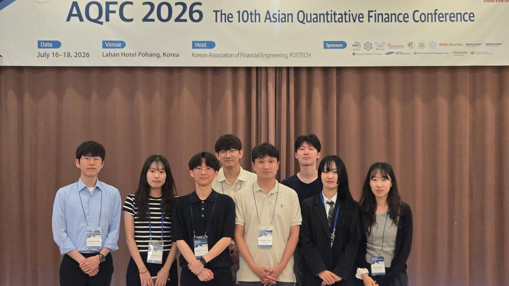
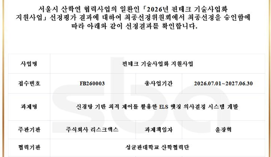

AQFC 2026
Presentations on transaction-cost control and portfolio learning.
FROM THE LAB
Conferences, research, and life in the lab.

Presentations on transaction-cost control and portfolio learning.

Hojin Ko presents at ICML in Seoul.

Selected for an industry–academia research collaboration.

Oral and poster presentations in Gyeongju.